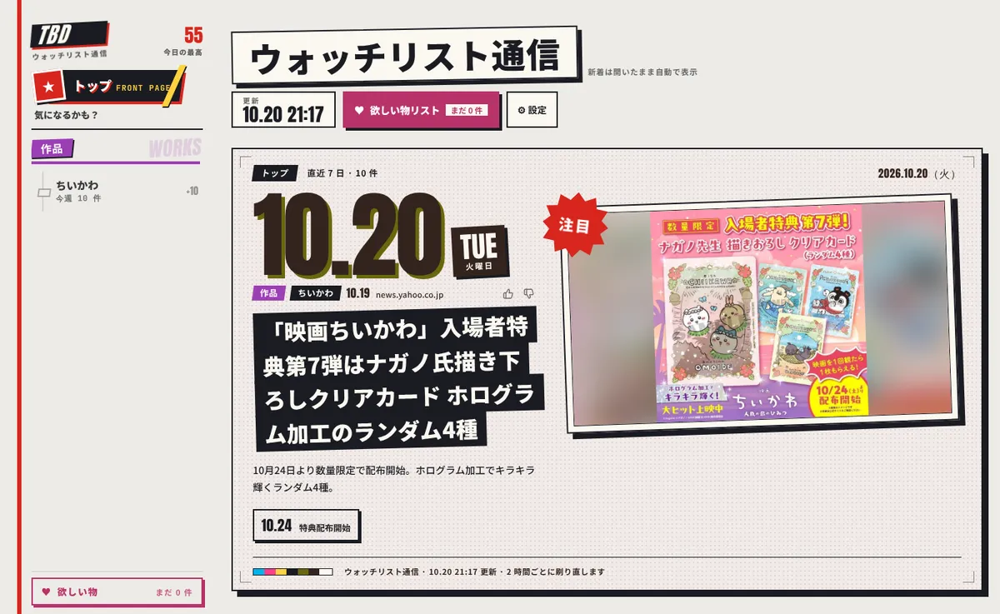
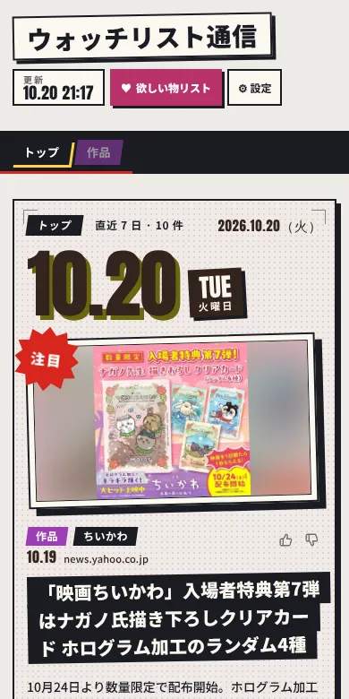

このブラウザは さんを覚えています（ふだんは自動で自分のページへ）開く →
好きな作品・グッズのニュースを、
店長が毎日集めて 1 ページに。
アニメ・ゲーム・ライブ・グッズ…気になるものを選ぶだけ。店長が毎日あちこちを回ってニュースを集め、 作品ごとの版面に整理しておきます。見逃しも、同じ話の重複もなし。


ジャンルを選んで、出てくるカードを「気になる / パス」。パスワードは要りません。
ニュース・発売日・イベントを毎日集めて、AI が同じ話をまとめ、見出しを付けます。
作品ごとの版面で、新しいことだけ。👍 / 👎 で、店長のおすすめがだんだん合ってきます。
「とりあえず店長のページをのぞいてみてね」— 店長
次からはこのメールアドレスでログインします。パスワードはありません。メールは送りません。
同じ話が何か国語かで出ているときは、ここで選んだ言語の記事を出します。
選んでいる言語：
「準備中」の言語は、集め始めるまでほかの言語の記事で代わりに出します。
ほかの言語の記事も見る
選んだ言語の記事がないときだけ、ここの言語の記事を出します。
画面の文字（ボタンや説明）はいまは日本語だけです。あとで設定から変えられます。
いくつでも。次のカードはこの中から出します。
右へ = 気になる、左へ = パス（ボタン・← → キーでも）。
店長がこれから集めに行くものです。あとでいつでも足したり外したりできます。